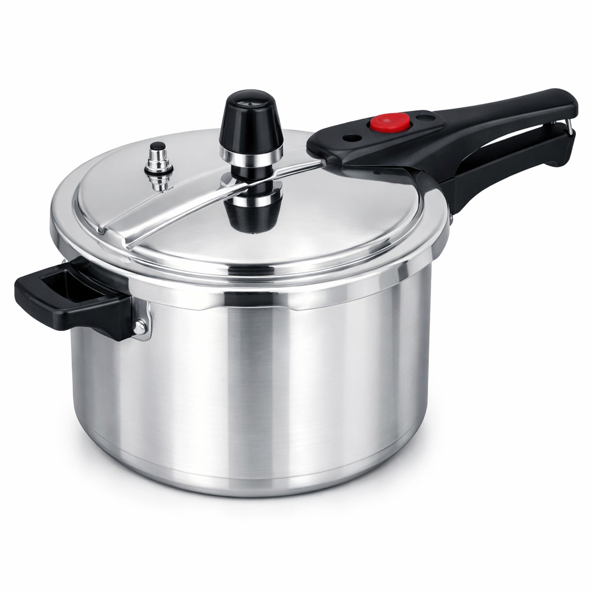
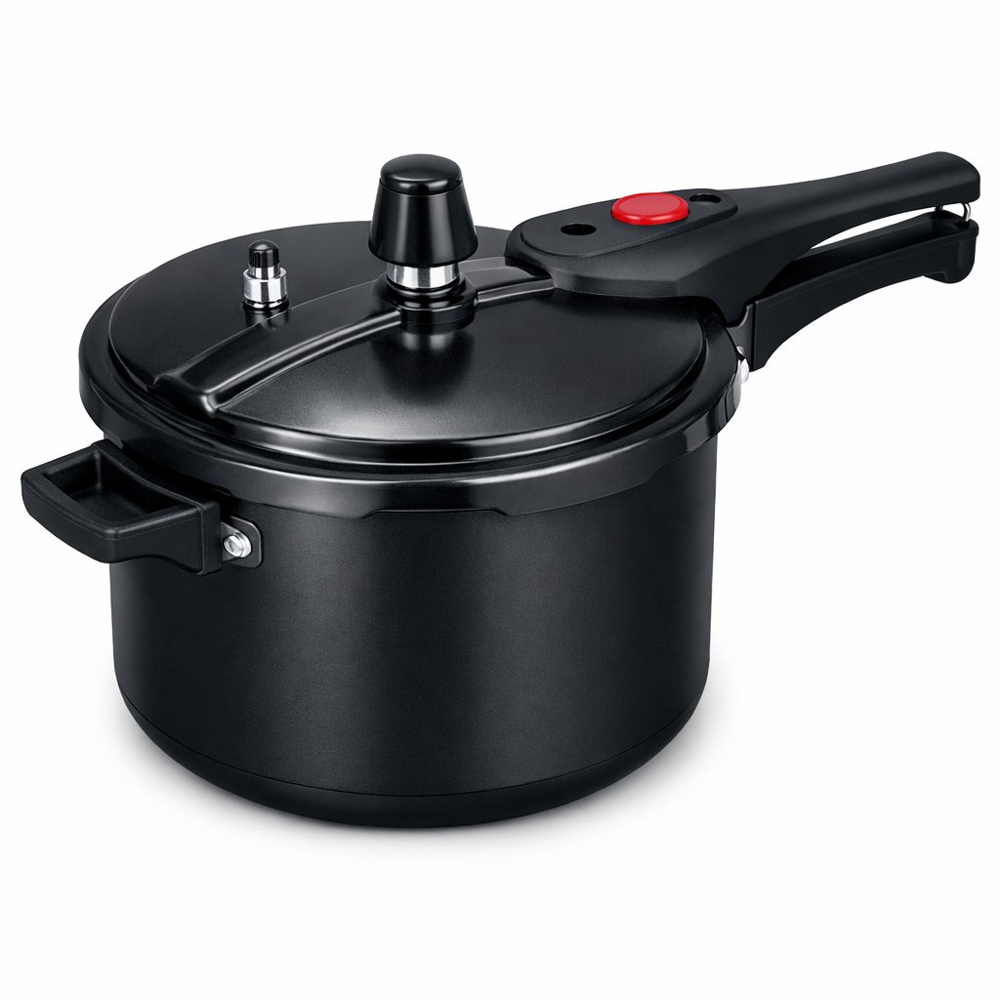
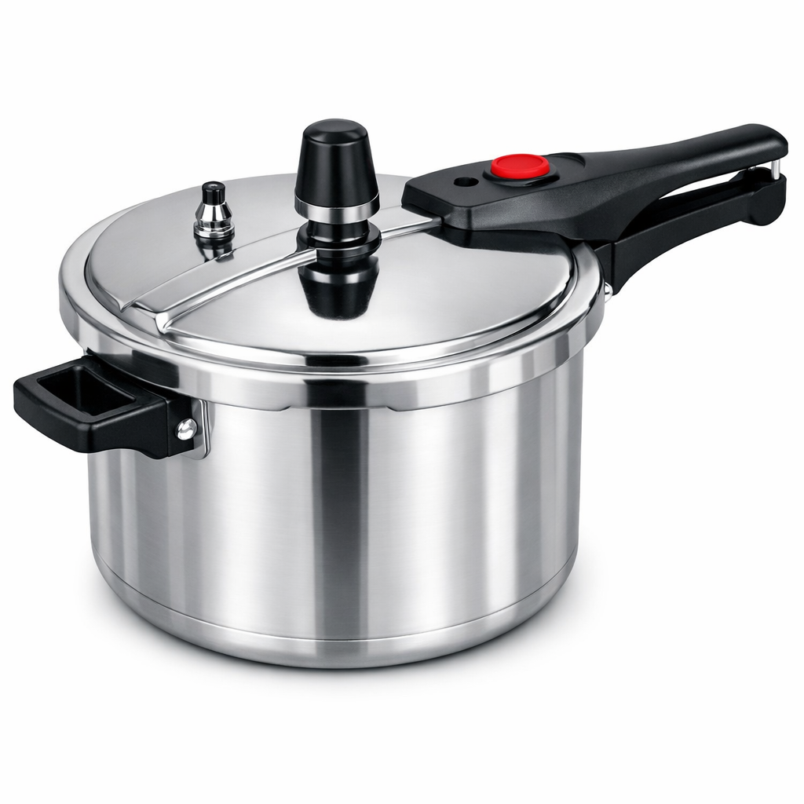
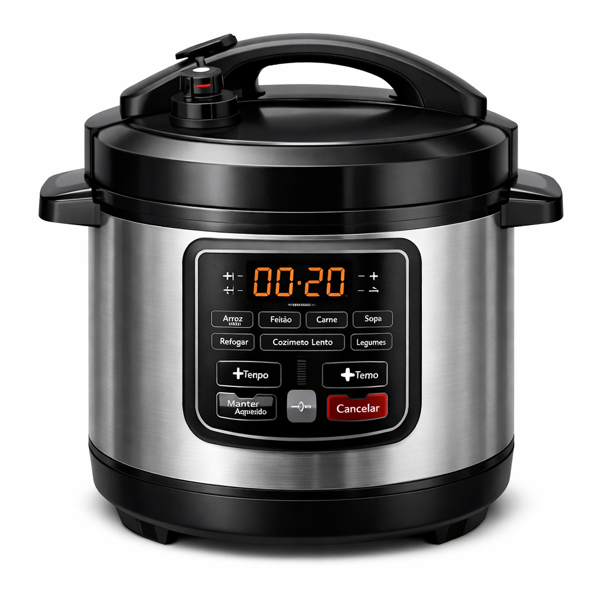

Existem vàrios tipos de panelas de pressão como por exemplo:
Alumínio Polido: O modelo tradicional, mais em conta e com aquecimento rápido.

Alumínio Antiaderente: Muito fáceis de limpar, pois evitam que o alimento grude no fundo.

Aço Inox: Mais duráveis, não soltam resíduos e possuem fundo triplo, o que distribui melhor o calor.

Com Visor de Vidro: Permite acompanhar o cozimento sem precisar abrir a panela.

As panelas de pressão elétricas: Alia praticidade e segurança avançada. Com controles automáticos, ela cozinha carnes, feijão e grãos até duas vezes mais rápido que modelos convencionais, sem precisar vigiar. A maioria das opções inclui múltiplos dispositivos contra acidentes e cubas antiaderentes fáceis de limpar.

aviso: as imaggens dessa página foram feitas por ia para evitar copright